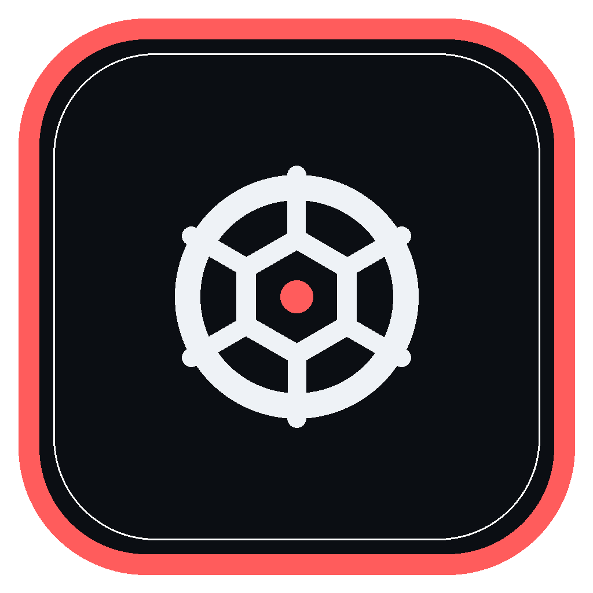
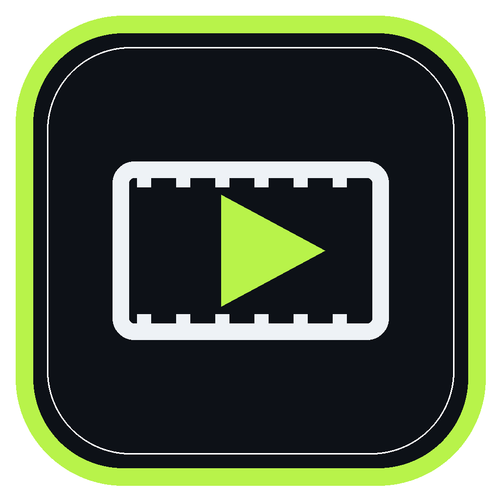
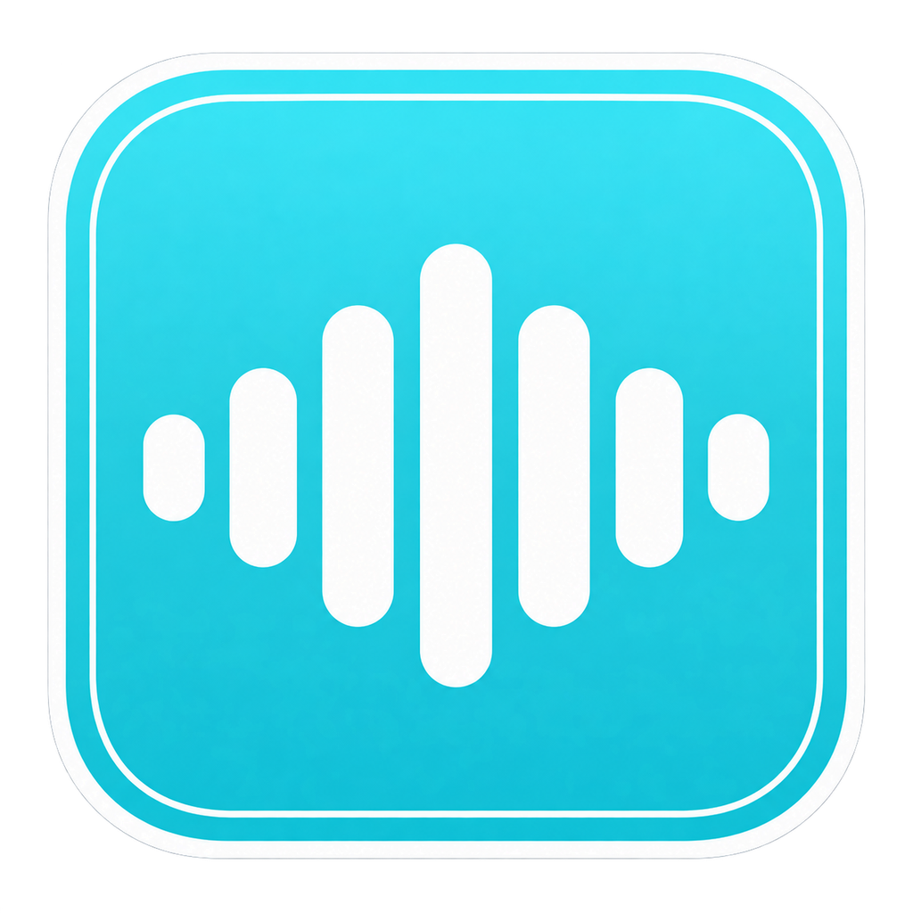
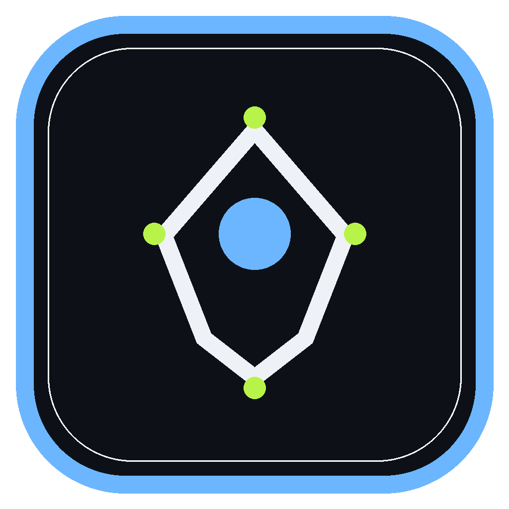
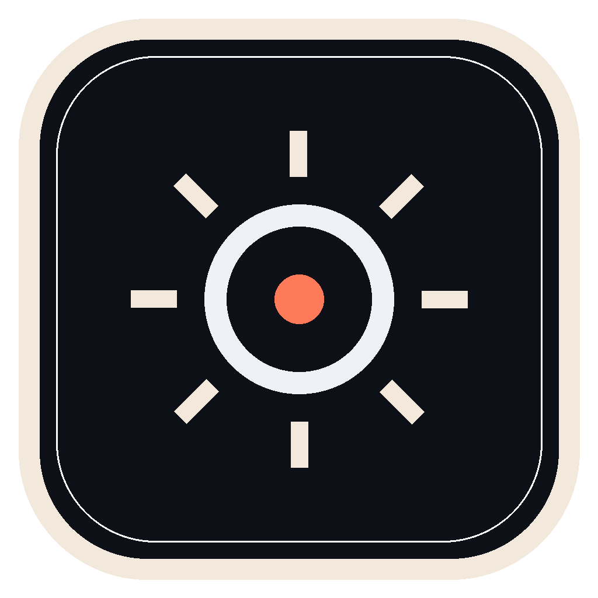
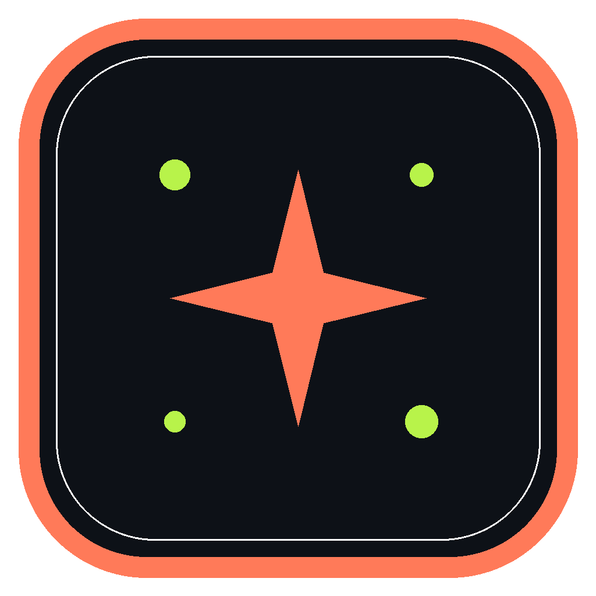
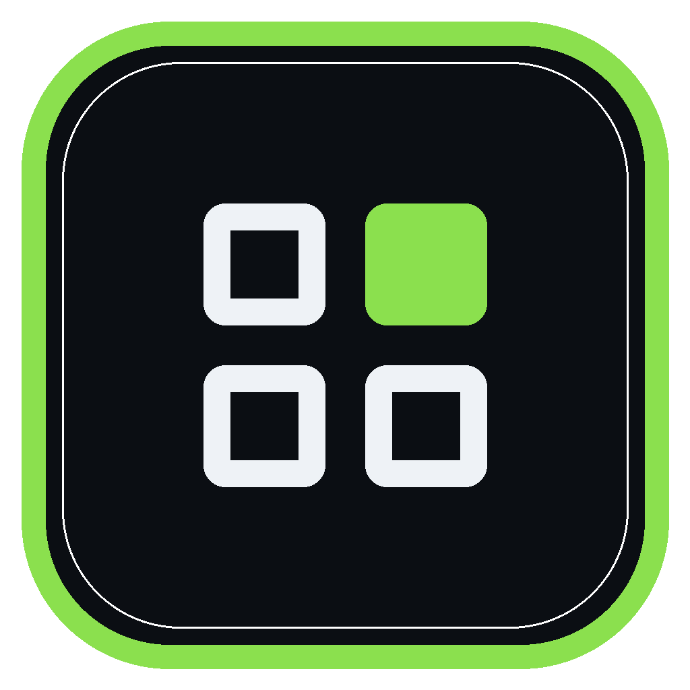
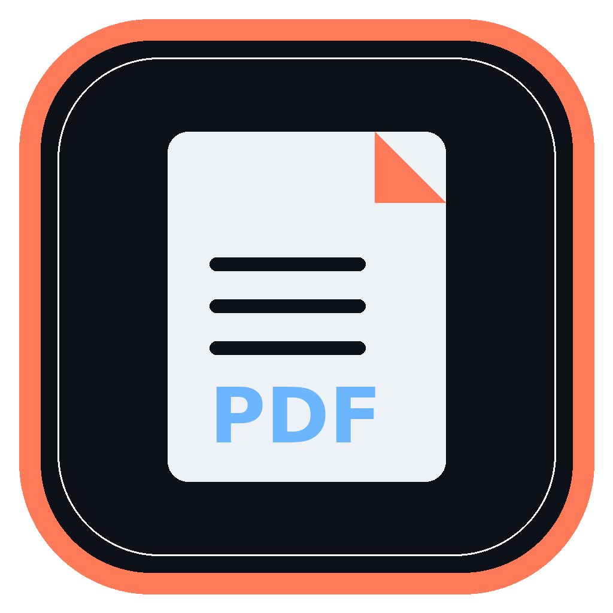

Kit creativo local · by SMOUJ013
Herramientas creativas,
sin suscripciones y sin nube.
Un kit personal de apps de escritorio, open source y local-first. Alternativas propias a las herramientas creativas de siempre, construidas para trabajar con tus archivos en tu equipo.
100 % local · nada se sube
Open source · MIT
Windows · sin instalador
Sin cuentas · sin telemetría
Apps del kit
Ocho apps Adobado, un mismo criterio
Todas son locales, open source y derivadas de ArtCraft con avisos conservados. Photo, Film y Sound ya abren en Windows; Art, Light, Effect y Design tienen build OK; Pdf está compilando.







Estado del taller
Qué falta para cerrar la serie
Sin duplicar apps: aquí solo queda el trabajo pendiente de build, prueba y publicación.
3 probadas
Builds y artifacts
Photo, Film y Sound abren en Windows. Art y Light tienen build OK pero artifact pendiente; Effect y Design siguen compilando.
En curso
Pruebas reales
Falta editar y exportar con archivos reales en cada app antes de marcarlas disponibles.
Bloqueado
Repo pendiente
La octava app espera que GitHub levante el límite temporal de creación de repositorios.
Cómo trabajamos
Principios del kit
01
Local primero
Tus archivos no salen del equipo. Sin cuentas, sin servidores y sin telemetría.
02
Abierto de verdad
Código MIT, dependencias auditables y formatos estándar. Sin cajas negras.
03
Herramientas honestas
Cada app hace una cosa bien y dice claramente qué no hace. Sin promesas infladas.